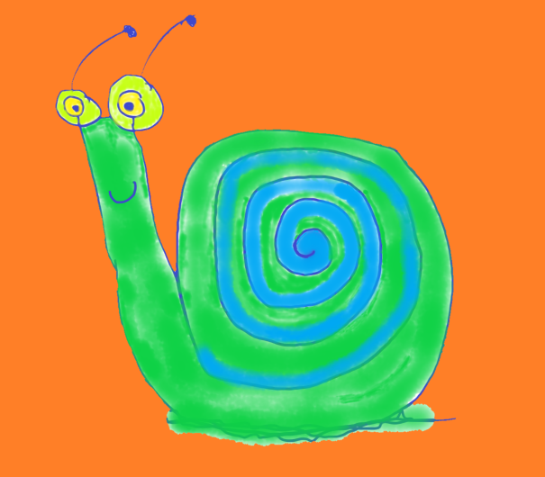
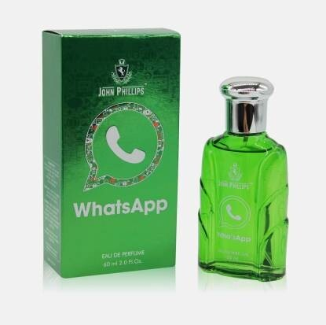
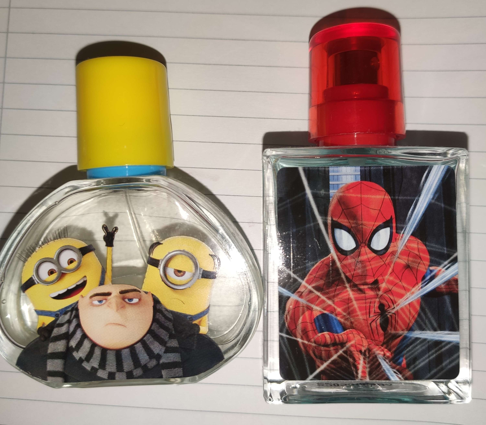
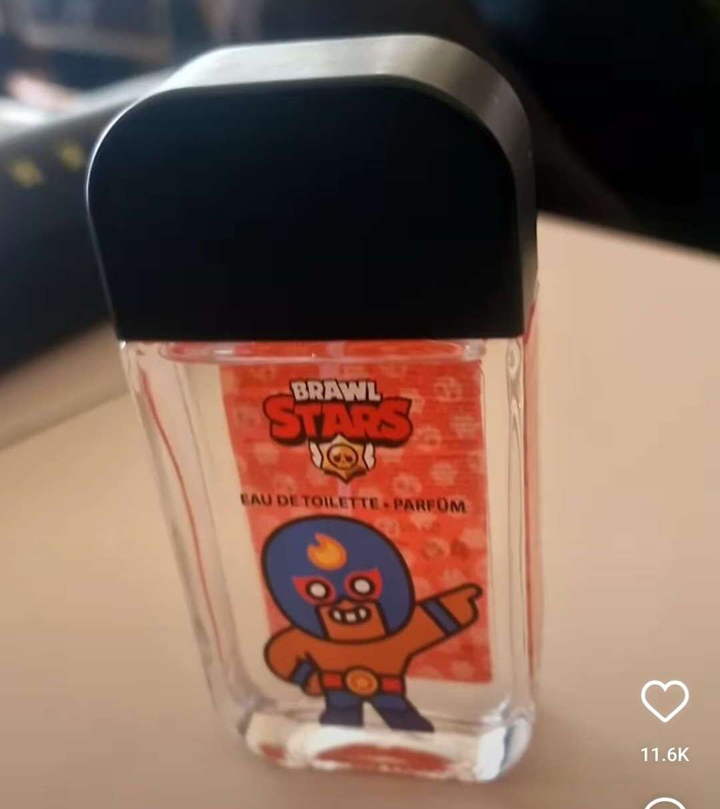
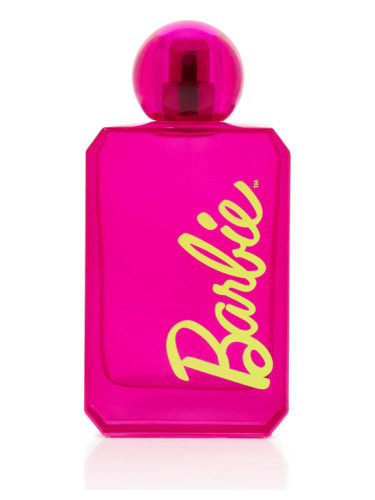
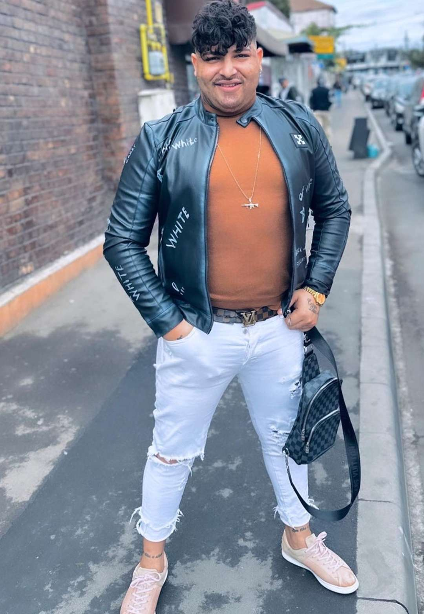
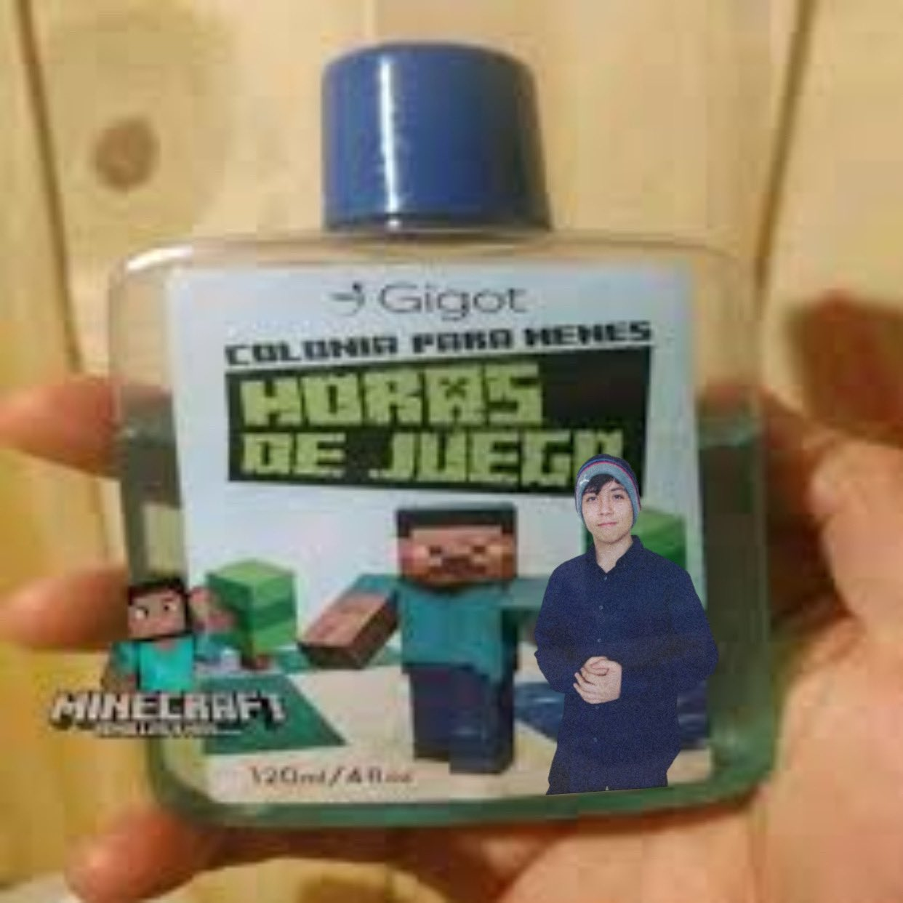

Ez. Sublime S.R.L. (MIROS FIN PENTRU UN OM FIN)
"Parfumul este lichidul cu un miros plăcut ce îți împrospătează viața în cele mai monotone momente"👃⚱
Fie că ești adeptul lui sau nu, este inevitabil să spui că un om nu capătă o alură captivantă în momentul în care poartă parfumul potrivit.
La fel s-au gândit și cei doi buni prieteni: Alex și Georgescu. Doi tineri antreprenori ce și-au propus să aducă pe piața din România o gamă largă de parfumuri inedite. Totul a început inainte de pandemie când cei doi s-au împrietenit. Situația a făcut ca cei doi să fie loviți de virus. Totodată, coincidența a făcut ca ambii să își piardă simțul mirosului, astfel fiind lipsiți de bucuria de a simți parfumul preferat. Inspirația le-a venit în cele mai grele momente și au promis că dacă vor trece amândoi peste acea perioadă grea își vor lua inima în dinți și vor crea un brand de parfum 100% românesc pentru a transmite bucuria mirosului tradițional pe plaiurile străine. Ambiția celor doi în acele momente era inconmensurabilă.
O simplă idee într-o situație vulnerabilă s-a dovedit a fi un jackpot în viitorul celor doi tineri de 20 și 21 de ani. Însă drumul se arată a fi anevoios pentru cei doi feciori proaspăt intrați pe piața comercială. Tot ce mai rămânea de făcut era să facă planul de idei și să obțină o sponsorizare.
Au început prin a-și pune întrebări ale căror răspunsuri ar obține succesul:
     